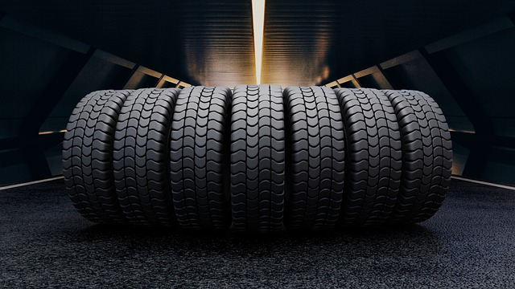
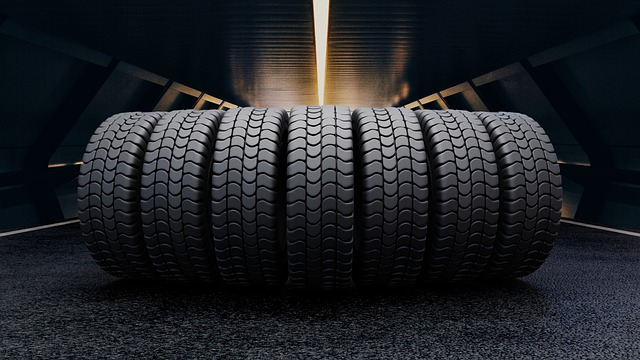

Retirada del neumático usado
En RTCN nos dedicamos a la retirada del neumatico usado transladandolos de vuestras instalaciones a las nuestras encargandonos del la carga y la descarga para comenzar con el proceso de reciclaje del mismo.
Neumáticos Reacondicionados
Los neumáticos reacondicionados de RTCN han sido revisados, reparados y ajustados para garantizar su funcionalidad y seguridad. Este proceso se realiza para neumáticos que han sufrido daños menores o desgaste irregular, pero que aún tienen una vida útil significativa. Al reacondicionar un neumático, se pueden corregir defectos como pinchazos, cortes o desgaste desigual de la banda de rodaje. Esto prolonga la vida útil del neumático y proporcionar una opción más económica para los propietarios de los vehículos.
El necesario proceso de reciclaje de neumáticos
La quema de neumáticos, ya sea de forma controlada o descontrolada, es un verdadero problema para el bienestar de nuestro planeta debido a la emisión de gases nocivos para el entorno que esto supone. El proceso de reciclaje de neumáticos implica triturarlos para obtener gránulos de caucho, que luego pueden ser utilizados como materia prima. Esta reutilización reduce la demanda de materias primas y disminuye la contaminación asociada con la producción de nuevos materiales.
¿Qué es el recauchutado de neumáticos?
Recauchutado de neumáticoses un proceso en el que la banda de rodadura desgastada de neumáticos usados se reemplaza por caucho nuevo, lo que prolonga la vida útil del neumático. El proceso implica una inspección minuciosa, pulir la banda de rodamiento desgastada y aplicar una banda de rodamiento nueva usando calor y presión. El resultado es un neumático que ofrece un rendimiento similar al de uno nuevo pero a una fracción del coste.